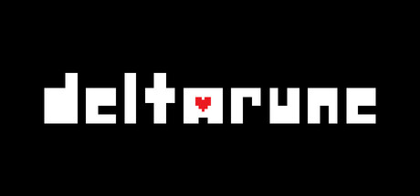
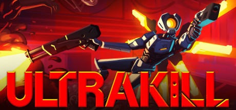
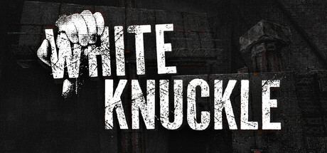
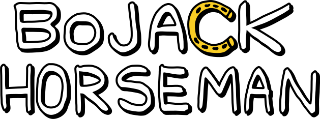
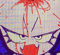

Undertale
this game is literally why i want to be a programmer i think this game is amazing there is an infinate amount of chances for you to put yourself into this world just play it

Deltarune
This game gave me permanent brainworms it has such interesting worldbuilding and character writing (omg the weird route made me cry)

Ultrakill
i would call this game without exaggeration the best first-person shooter on the market. its fast paced, its challeging, its machanics have so much depth, it has amazing enemy variety

White Knuckle
i would say less that this game less inspires me and more has me in a choke-hold its a rouge-like speed climbing game that pulls you in and doesn't let go. i highly reccomend it.

Nomnomnami
Nami is a gamedev who makes some really good rpgmaker and renpy games they made BAD END THEATER which will always be one of my favorite visual novels along with many other great stories please check out their website

Delicious in dungeon (dungeon meshi)
this anime is an example of my bias to things with detailed worldbuilding its a show about a group of adventureers delving into a dungeon and eating monsters so they can go deeper faster with less supplies and the monsters have really detailed explanations on how they function its great

BoJack Horseman
its a show about a bad person who was on a famous tv show in the 90's i really dont want to spoil it but if you need one episode to watch to convince you watch "the view from halfway down" it made me cry

Jamie Paige
she is a music artist who makes really good vocaloid tracks please listen to her songs!!!1! shes also in Flavor Foley but i like her solo stuff too so i had to include her
Flavor Foley
Flavor Foley is a band that makes volaloid tracks they literally made the most poplular design for the voicebank Yi Xi (奕夕) if you see a design for that voicebank its probably inspired by the one used in butcher vanity i wouldn't say thats my favorite track though id say thats either spoken for or streetcat

Femtanyl
Femtanyl is an electronic music duo i really dont know how to describe their sound it just really hits that spot in my brain that requires constent stimulation thats caused by ADHD somewhere between brakecore and something else though. two tracks i reccomend are SICK OF IT and GIRL HELL 1999